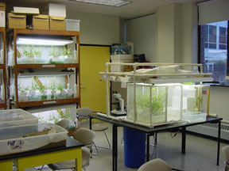

Teaching
This page contains links to websites for courses I no longer teach. They have not been updated for some time. Please go here if you'd like information on the courses I currently teach.

Undergraduate level:
- BIOS 1700 Life Science for Elementary Educators I
- BIOS 2700 Life Science for Elementary Educators II

Graduate level:On-line courses (offered via e-learning)
- BIOS 6100 Teaching of Biological Science
- SCI 5700 Issues in Ecology/Evolution for Teachers
- UPTON ACADEMY 2005 Life Science for Elementary Educators
- SCI 5700 Life Science for Teachers -last offered Fall 2013
- SCI 5900 Earth Sciences for Teachers -last offered Summer I 2013